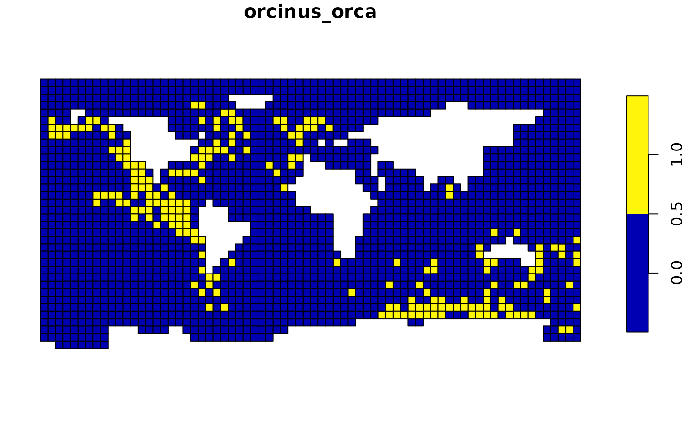
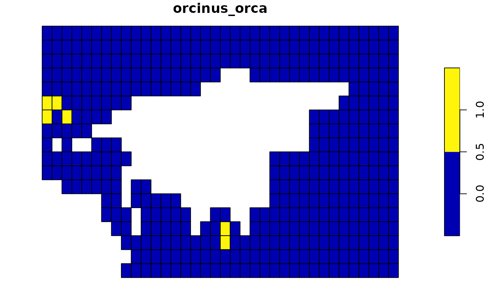

Wildcards are special characters that represent any valid alternative character. In the context of c-squares, wildcards can be used to compactly notate a range of raster cells. Let’s say you have the following string of four c-squares defined:
library(csquares)
csq <- as_csquares("1000:1|1000:2|1000:3|1000:4")
print(csq)
#> csquares [1:1] 4 squaresThese are four squares of 5° by 5°. As you can see the first four
digits of each of the four squares are identical. Therefore, these
squares could be notated as "1000:*" where *
is the wildcard symbol. The wildcard thus represent each of the four
posibble values that are allowed at its position. Constructing a
csquares object with as_csquares() results in
an identical object when the either the long format or the compact
notation with wildcard is used.
csqw <- as_csquares("1000:*")
print(csqw)
#> csquares [1:1] 4 squares
identical(csq, csqw)
#> [1] TRUE‘Ceci n’est pas une pipe’
The csquares object does not store wildcards, as it will
use the expanded format with explicit notation, where each raster cell
is included in the character string and is separated by the pipe
"|" character. The function as_csquares()
wraps a call to expand_wildcards() which expands c-square
codes containing wildcards. It will replace the short notation with
wildcard by pipe seperated csquares codes.
expand_wildcards("1000:*") |>
as.character()
#> [1] "1000:1|1000:2|1000:3|1000:4"Wildcards can also be used to query spatial data and select specific blocks of raster cells. When used for searching, the wildcard is sometimes represented by the percentage character instead of an asterisk. For this R package it doesn’t matter. Bother characters are interpreted exactly the same.
The example below shows how you can filter a specific quadrant from the global killer whale data set using a wildcard notation.
library(dplyr, warn.conflicts = FALSE)
library(sf, warn.conflicts = FALSE)
#> Linking to GEOS 3.10.2, GDAL 3.4.1, PROJ 8.2.1; sf_use_s2() is TRUE
orca_sf <-
orca |>
as_csquares(csquares = "csquares") |>
st_as_sf()
plot(orca_sf["orcinus_orca"])
## Note that the first number in the csquares code (1)
## represents the North East quadrant
## The remainder of the code consists of wildcards.
plot(
orca_sf |>
filter(
in_csquares(csquares, "1***:*")
) |>
drop_csquares() |>
select("orcinus_orca")
)
Consider the following csquares object:
csq_example <- as_csquares(c("1000:100|1000:111|1000:206|1000:207", "1000:122"))It is a vector of two elements, the first containing 4
squares, the second 1 square. Let’s say we want to check if
"1000:1**" matches with any of the elements in the
vector.
in_csquares(csq_example, "1000:1**")
#> [1] TRUE TRUEWhich is TRUE for both elements in the vector. This
makes sense as both elements indeed contain csquares codes that match
with "1000:1**". However, the first element also contains
elements that don’t match. The reason that the example still returns
TRUE in both cases is because the mode is set
to "any". Meaning that it will return TRUE if
any of the codes in an element matches. You should set the mode to
"all" if you only want a positive match when all codes in
an element match:
in_csquares(csq_example, "1000:1**", mode = "all")
#> [1] FALSE TRUENow, let’s compare the same csquares object with
"1000:*" which has a lower resolution than the squares in
the object:
in_csquares(csq_example, "1000:*")
#> [1] TRUE TRUEAgain, it matches with all elements in the vector, even
though the resolution is different. This is because
in_csquares() isn’t very strict by default. Meaning that it
will also match with any ‘child’ square with a higher resolution. If you
want a strict match where the resolution also matches use
strict = TRUE:
in_csquares(csq_example, "1000:*", strict = TRUE)
#> [1] FALSE FALSE